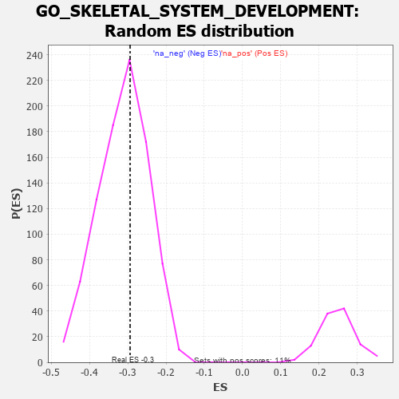

| | | Dataset | 7d |
| Phenotype | NoPhenotypeAvailable |
| Upregulated in class | na_neg |
| GeneSet | GO_SKELETAL_SYSTEM_DEVELOPMENT |
| Enrichment Score (ES) | -0.2939824 |
| Normalized Enrichment Score (NES) | -0.94467676 |
| Nominal p-value | 0.5846501 |
| FDR q-value | 0.9145893 |
| FWER p-Value | 1.0 |
Table: GSEA Results Summary
Fig 1: Enrichment plot: GO_SKELETAL_SYSTEM_DEVELOPMENT
Profile of the Running ES Score & Positions of GeneSet Members on the Rank Ordered List
| PROBE | GENE SYMBOL | GENE_TITLE | RANK IN GENE LIST | RANK METRIC SCORE | RUNNING ES | CORE ENRICHMENT | | 1 | SIX2 | | | 40 | 3.152 | 0.0530 | No |
| 2 | TGFB3 | | | 49 | 2.654 | 0.1009 | No |
| 3 | SP3 | | | 131 | 1.391 | 0.1162 | No |
| 4 | SMAD5 | | | 231 | 0.979 | 0.1217 | No |
| 5 | TEAD4 | | | 286 | 0.846 | 0.1304 | No |
| 6 | SHOX2 | | | 288 | 0.842 | 0.1458 | No |
| 7 | TAPT1 | | | 354 | 0.743 | 0.1513 | No |
| 8 | AXIN2 | | | 383 | 0.713 | 0.1609 | No |
| 9 | ALX4 | | | 413 | 0.686 | 0.1698 | No |
| 10 | SUFU | | | 443 | 0.665 | 0.1784 | No |
| 11 | SRF | | | 542 | 0.615 | 0.1773 | No |
| 12 | NLE1 | | | 565 | 0.609 | 0.1857 | No |
| 13 | ALX1 | | | 590 | 0.598 | 0.1937 | No |
| 14 | HES5 | | | 661 | 0.571 | 0.1953 | No |
| 15 | FST | | | 698 | 0.560 | 0.2011 | No |
| 16 | WDR48 | | | 975 | 0.489 | 0.1750 | No |
| 17 | MEF2C | | | 1054 | 0.473 | 0.1738 | No |
| 18 | RAI1 | | | 1071 | 0.469 | 0.1804 | No |
| 19 | SRC | | | 1128 | 0.459 | 0.1818 | No |
| 20 | SNX19 | | | 1146 | 0.454 | 0.1880 | No |
| 21 | CARM1 | | | 1413 | 0.408 | 0.1617 | No |
| 22 | WWOX | | | 1688 | 0.359 | 0.1336 | No |
| 23 | MEIS1 | | | 1723 | 0.351 | 0.1357 | No |
| 24 | LRP5 | | | 1769 | 0.342 | 0.1363 | No |
| 25 | SGPL1 | | | 1820 | 0.334 | 0.1361 | No |
| 26 | DYM | | | 2006 | 0.304 | 0.1182 | No |
| 27 | BMP7 | | | 2107 | 0.290 | 0.1109 | No |
| 28 | ANO6 | | | 2339 | 0.255 | 0.0862 | No |
| 29 | NSD2 | | | 2784 | 0.185 | 0.0333 | No |
| 30 | WDR5 | | | 2892 | 0.168 | 0.0228 | No |
| 31 | FGFR2 | | | 2895 | 0.167 | 0.0256 | No |
| 32 | PCSK5 | | | 2983 | 0.152 | 0.0174 | No |
| 33 | FOXN3 | | | 3159 | 0.129 | -0.0024 | No |
| 34 | SMAD3 | | | 3303 | 0.105 | -0.0187 | No |
| 35 | SMAD1 | | | 3337 | 0.099 | -0.0210 | No |
| 36 | FMN1 | | | 3363 | 0.095 | -0.0225 | No |
| 37 | SMAD7 | | | 3369 | 0.093 | -0.0214 | No |
| 38 | MED1 | | | 3405 | 0.089 | -0.0242 | No |
| 39 | MAPK3 | | | 3589 | 0.062 | -0.0463 | No |
| 40 | SBDS | | | 3640 | 0.053 | -0.0516 | No |
| 41 | SKI | | | 3762 | 0.032 | -0.0664 | No |
| 42 | NIPBL | | | 3900 | 0.010 | -0.0836 | No |
| 43 | JAG2 | | | 3903 | 0.010 | -0.0837 | No |
| 44 | FREM1 | | | 3912 | 0.008 | -0.0845 | No |
| 45 | EXT1 | | | 3954 | 0.001 | -0.0897 | No |
| 46 | EYA1 | | | 3987 | -0.006 | -0.0937 | No |
| 47 | MCPH1 | | | 4039 | -0.014 | -0.0999 | No |
| 48 | TAL1 | | | 4064 | -0.018 | -0.1026 | No |
| 49 | SFRP2 | | | 4065 | -0.018 | -0.1023 | No |
| 50 | TCF15 | | | 4077 | -0.020 | -0.1033 | No |
| 51 | TLL1 | | | 4188 | -0.039 | -0.1165 | No |
| 52 | TIMP1 | | | 4209 | -0.043 | -0.1183 | No |
| 53 | PAX5 | | | 4255 | -0.051 | -0.1231 | No |
| 54 | WNT11 | | | 4282 | -0.056 | -0.1253 | No |
| 55 | SETD2 | | | 4443 | -0.084 | -0.1441 | No |
| 56 | WNT5B | | | 4517 | -0.098 | -0.1516 | No |
| 57 | FGFR3 | | | 4656 | -0.129 | -0.1667 | No |
| 58 | POC1A | | | 4768 | -0.151 | -0.1780 | No |
| 59 | FBXW7 | | | 4816 | -0.161 | -0.1810 | No |
| 60 | DLG1 | | | 4860 | -0.169 | -0.1833 | No |
| 61 | EP300 | | | 4941 | -0.186 | -0.1901 | No |
| 62 | ETS2 | | | 5096 | -0.223 | -0.2055 | No |
| 63 | MMP9 | | | 5108 | -0.227 | -0.2027 | No |
| 64 | TBX1 | | | 5166 | -0.241 | -0.2055 | No |
| 65 | ASH1L | | | 5203 | -0.248 | -0.2055 | No |
| 66 | VDR | | | 5517 | -0.325 | -0.2393 | No |
| 67 | FGFR1 | | | 5543 | -0.332 | -0.2363 | No |
| 68 | ROR2 | | | 5626 | -0.353 | -0.2402 | No |
| 69 | PCGF2 | | | 5943 | -0.451 | -0.2720 | No |
| 70 | FBN1 | | | 6080 | -0.499 | -0.2801 | No |
| 71 | IFT80 | | | 6135 | -0.515 | -0.2775 | No |
| 72 | SMAD2 | | | 6216 | -0.541 | -0.2777 | No |
| 73 | RGN | | | 6233 | -0.547 | -0.2696 | No |
| 74 | BBS2 | | | 6383 | -0.608 | -0.2773 | No |
| 75 | TRPV4 | | | 6515 | -0.668 | -0.2816 | Yes |
| 76 | MKS1 | | | 6607 | -0.715 | -0.2800 | Yes |
| 77 | DMRT2 | | | 6718 | -0.768 | -0.2798 | Yes |
| 78 | WDR19 | | | 6796 | -0.812 | -0.2746 | Yes |
| 79 | PTH1R | | | 6845 | -0.839 | -0.2653 | Yes |
| 80 | HEXB | | | 6894 | -0.864 | -0.2554 | Yes |
| 81 | FAT4 | | | 6948 | -0.901 | -0.2456 | Yes |
| 82 | RYK | | | 7102 | -1.000 | -0.2466 | Yes |
| 83 | WDR60 | | | 7153 | -1.038 | -0.2338 | Yes |
| 84 | UFD1 | | | 7157 | -1.040 | -0.2150 | Yes |
| 85 | MSX2 | | | 7299 | -1.171 | -0.2113 | Yes |
| 86 | LOXL2 | | | 7403 | -1.269 | -0.2010 | Yes |
| 87 | SPEF2 | | | 7418 | -1.289 | -0.1790 | Yes |
| 88 | LHX1 | | | 7431 | -1.305 | -0.1565 | Yes |
| 89 | MMP13 | | | 7453 | -1.340 | -0.1345 | Yes |
| 90 | PPIB | | | 7499 | -1.396 | -0.1145 | Yes |
| 91 | PKD1 | | | 7628 | -1.611 | -0.1010 | Yes |
| 92 | DLX5 | | | 7845 | -2.378 | -0.0846 | Yes |
| 93 | MMP2 | | | 7875 | -2.574 | -0.0409 | Yes |
| 94 | FBN2 | | | 7906 | -2.873 | 0.0083 | Yes |
Table: GSEA details [plain text format]

Fig 2: GO_SKELETAL_SYSTEM_DEVELOPMENT: Random ES distribution
Gene set null distribution of ES for GO_SKELETAL_SYSTEM_DEVELOPMENT